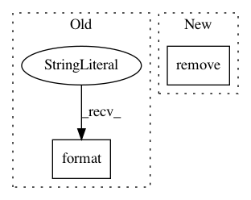

6d8bc9f8cd64a8452b19eea76fd8d59f3da8e3e9,lib/matplotlib/testing/decorators.py,_ImageComparisonBase,copy_baseline,#_ImageComparisonBase#Any#Any#,186
Before Change
if os.path.exists(orig_expected_fname):
shutil.copyfile(orig_expected_fname, expected_fname)
else:
reason = ("Do not have baseline image {} because this "
"file does not exist: {}".format(expected_fname,
orig_expected_fname))
raise ImageComparisonFailure(reason)
return expected_fname
def compare(self, idx, baseline, extension):
After Change
try:
// os.symlink errors if the target already exists.
with contextlib.suppress(OSError):
os.remove(expected_fname)
try:
os.symlink(orig_expected_fname, expected_fname)
except OSError: // On Windows, symlink *may* be unavailable.
shutil.copyfile(orig_expected_fname, expected_fname)
In pattern: SUPERPATTERN
Frequency: 3
Non-data size: 2
Instances
Project Name: matplotlib/matplotlib
Commit Name: 6d8bc9f8cd64a8452b19eea76fd8d59f3da8e3e9
Time: 2019-06-11
Author: anntzer.lee@gmail.com
File Name: lib/matplotlib/testing/decorators.py
Class Name: _ImageComparisonBase
Method Name: copy_baseline
Project Name: vatlab/SoS
Commit Name: 7eb019d10d9a603e5f2b29300fa2d811e197d529
Time: 2017-02-10
Author: bpeng@mdanderson.org
File Name: sos/__main__.py
Class Name:
Method Name: cmd_remove
Project Name: CyberReboot/poseidon
Commit Name: 8fbca5af8c1395ea378749b4dc37e6769c0f6a84
Time: 2019-08-28
Author: clewis@iqt.org
File Name: poseidon/controllers/faucet/parser.py
Class Name: Parser
Method Name: config